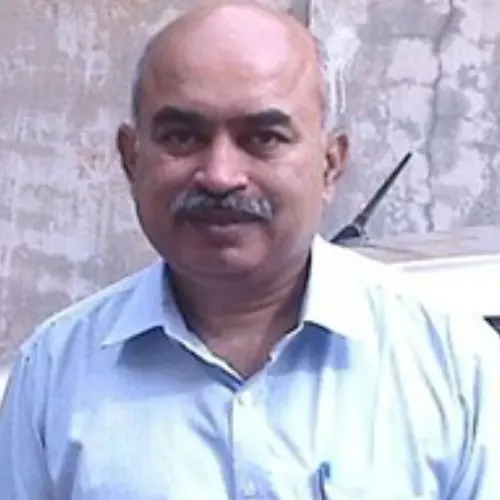

India member
H J Shiva Prasad
Name: H J Shiva Prasad Highest qualification and awarding university PhD, University of Sambalpur Designation Professor of Civil Engineering Employer G B Pant University of Agriculture and Technology, Pantnagar Contact details: Email: WhatsApp number/Mobile number Prof.hjsp@gm…
Published 5 July 2022 · Updated 7 April 2025

| Name: | H J Shiva Prasad |
| Highest qualification and awarding university | PhD, University of Sambalpur |
| Designation | Professor of Civil Engineering |
| Employer | G B Pant University of Agriculture and Technology, Pantnagar |
Contact details:
|
|
| Prof.hjsp@gmail.com | |
| +91-8410119571 / 9719245303 | |
| Home page link on your employer web site if available | https://gbpuat.ac.in/colleges/COT/D1/shiva_prasad_profile.html |
| Key areas of interest | Hydrology and Water Resources, Surface and Groundwater resources management, Water quality and GIS applications with a focus on multidisciplinary approach and sustainable management of water |
| Web links for your research profile on Google scholar; ORCID or ResearchGate (if available); only one of them please. |
Professor Prasad has over 32 years’ professional experience and his work has involved multi-disciplinary approach to water research. He got more than thirty two (32) years of teaching and industrial experience at different institutions/universities/organisations. He has more than fifty seven publications of National and International Journals / Conferences to his credit. He has organised thirty (30) training / workshop programmes for the faculty of engineering colleges, field engineers funded by DST, MHRD, AICTE-ISTE, Science Academies, TEQIP WORLD BANK project and attended more than fifty (50) workshops, training programmes programmes organised by Science Academy, DST, DOE, AICTE, ISTE, ICH, and NORAD. He has undergone the International training on Integrated Water Resources Management (IWRM) in the context of Developing and Transition Countries” organised by Bern University of Applied Sciences, Architecture, Wood and Civil Engineering during the year 2007 at Burgdorf, SWITZERLAND Sponsored by Kfw Germany, a workshop on Norwegian Agency for Development Cooperation (NORAD) sponsored organised through the International Centre for Hydropower (ICH) and Hydro Lab Private Limited, workshop on “Sediment Sensitive Operations In Hydropower Systems” held during 2008 at KATHMANDU, Nepal and undergone UNESCO sponsored International German Summer School (IGSH) programme on Urban Hydro Geology at RUHR University, Bochum, Germany during 2011. He has also attended and presented papers in International conferences at MUSCAT, Oman during 2006 and 2011 and DHAKA, Bangladesh during 2007.
Research Project
- Ministry of Human Resources and Development (MHRD), Govt. of India under Scheme for Promotion of Academic and Research Collaboration (SPARC) sponsored “Recharge Process of Springs and its Management to mitigate anthropogenic and climate change impact for water Security: A case study in part of Kumaun Lesser Himalaya, India” –Co PI
- Ministry of Human Resources and Development (MHRD), Govt. of India under Scheme for Promotion of Academic and Research Collaboration (SPARC) sponsored “Securing Water for Agricultural and Food Sustainability: Developing Tran disciplinary Approach for Integrated Water Resources Management”. –Co PI
(Needless to say that both the projects are in collaboration with Australian reputed universities like Western Sydney University, University of Melbourne, Queensland University of Technology) - Ministry of Earth Sciences (MOES), Govt. of India sponsored “Reclamation of Wastewater for Water Reuse and Water Security through Sustainable Water Resource Management” –Co PI
- He has supervised many masters and honours students in the area water resources and GIS applications.
Key Publications/Reports
- Management of River Reservoir using Multi-Objective Particle Swarm Optimization Techniques- H J Shiva Prasad, Prakash C Swain and Biswajit Satpathy, Journal of Water Sciences Research (JWSR), JWSR is indexed in ISC (http://www.isc.gov.ir) and SID (http://www.sid.ir) with license holder of IAU-South Tehran Branch.
- “Water Quality Assessment of Bhimtal Lake”: H J Shiva Prasad, Alishan Ahmed, Mukul Tiwari, Pranav Yadav, Tanmay Bhat; International Journal of Engineering search and Technology (http://www.ijert.org/ ), Volume 3, Issue 03, [ISSN:2278-0181]
- “Suggesting Best Fitting Distribution For Estimating Flood For River Sarda at Uttarakhand, India”: Saurabh Sah, Jyothi Prasad and H J Shiva Prasad; IJRET-International Journal of Research in Engineering and Technology Volume 4, August 2015. e-ISSN:2319-1163,P-ISSN:2321-7308, Issue 8, Page No:312-315; Impact Factor:2.375
- Asset Mapping for Udham Singh Nagar and Nainital District of Uttarakhand using Space Based Information Support System, Sanjay Singh Negi, H J Shiva Prasad and Rohit Pant, International Conference on “Recent Advances in Civil and Environmental Engineering” (RACEE – 2017) http://www.racee17.esy.es, March 4- 5, 2017, Civil Engineering Department, Walchand College of Engineering, Sangli (MS)
www.walchandsangli.ac.in - Dam breach analysis- A case study of Haripura Dam of Uttarakhand, Jyothi Prasad and H J Shiva Prasad, International Humboldt Kolleg on “Climate, Water and Environment” (LIMIT-2019), September 25-27, 2019 at Uttarakhand Academy of Administration (ATI), Nainital.